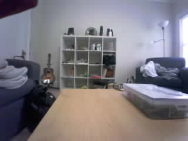
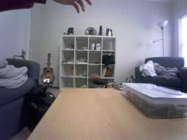

Frame 29: CALIBRATING | 0.000% changed area
Original JPEG · MeasurementsOriginal photos are unchanged. Boxes show the largest changed region against the learned empty scene. Area cutoff: 3%; confirmation: 3 frames. This is not deer recognition.

Frame 29: CALIBRATING | 0.000% changed area
Original JPEG · Measurements
Frame 36: CALIBRATING | 0.000% changed area
Original JPEG · Measurements